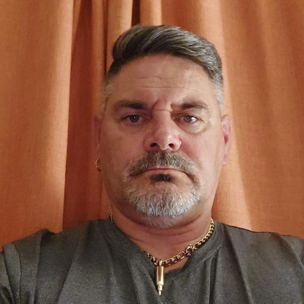
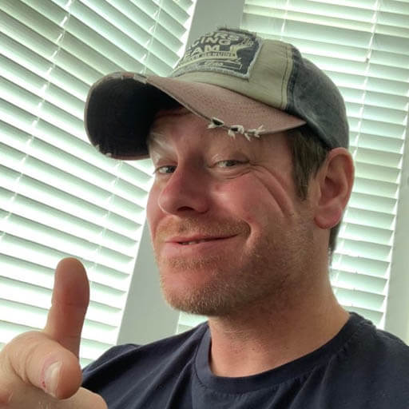

Committee
The Yelverton Bowmen committee is elected each year at the AGM. The current committee is listed below.
ChairmanLinda Wright The Chairman is the ‘manager’ of the club and the committee. They lead committee meetings and are responsible for coordination of committee tasks. |
|
|
Vice ChairmanVACANT The Vice-Chairman takes on the Chairman’s responsibilities when they are not available. |
SecretaryNick Tripp The Secretary is normally the point of contact for those outside the club. They are the record keeper for committee meetings. |
TreasurerJamie Pruden Responsible for administering the club’s finances. |
|
|
Membership SecretaryVACANT Responsible for processing new member applications and the renewal of existing memberships. Typically works closely with the Treasurer. |
|
|
Records officerPaul Warren Collects scored rounds and issues classifications, records, etc as required. They also manage the club’s contribution to postal leagues. |
|  |
Equipment officerRichard Skinner Responsible for the acquisition and maintenance of club equipment. |

|
Training coordinatorIain Lees Responsible for the organisation and running of beginners courses. They are a point of contact for members of the public wishing to join the club. |
|  |
Safeguarding and Welfare OfficerIain Lees In the unlikely event of a member’s welfare being threatened the SWO would be the point of contact for those concerned. |
|
|
WebmasterVACANT Responsible for the creation and maintenance of the club’s online presence, currently a website and Facebook page. |
|
|
ArchivistVACANT Collator and keeper of historical records relating to the club and its members. |
|
|
Public relations officerVACANT Generally responsible for outgoing correspondence, including contact with local newspapers and television to inform them of activities, such as hosting tournaments. They also contact archery publications with stories of interest. They may also be the point of contact at public events such as county shows and have-a-goes. |
Junior RepBecky Lonton / Jenny Kerchey The voice of the junior members to the committee. They also run junior specific classifications and postal leagues that aren’t run by the records officer. |
|
|
Tournament OfficerVACANT Responsible for organisation and running of tournaments hosted by the club, as well as those hosted on behalf of other bodies. |

|
Social SecretaryIain Lees Responsible for organising social events for the club, such as Christmas meals, fun shoots, day trips, etc |
Constitution
Click here to view the Yelverton Bowmen constitution.
Safeguarding
All Yelverton Bowmen Activities follow the ArcheryGB Safeguarding Children & Young People Policy
The Archery GB “Safeguarding Children & Young People Policy” is a comprehensive policy with an accompanying toolkit of Guidance Documents,
Template Forms and Flowcharts which ensures that clubs deliver effective Child Protection for the children and young people in Archery.
The Policy is openly available to all club members and parents of club juniors.
Archery GB cares deeply about this sport being a “Family Sport” and a “Sport for AN”. Sport is fun – it gives us all the opportunity to make new friends, try out new activities, develop new skills and give something back to our
communities. Under the policy,Protection of Children and Young People and their safety is paramount for children and young people in the archery environment.
In accordance with ArcheryGB insurance requirements, every club must comply with the ArcheryGB “Policy for Safeguarding Children, Young People and Vulnerable Adults” and all of our coaches have been checked for criminal
records and suspicious behaviour disclosures and have to regularly attend NSPCC child protection courses.
Privacy Statement
When you become a member of, or renew your membership with Yelverton Bowmen you will automatically be registered as a member of Archery GB and the relevant County (Devon and Cornwall Archery Society) and Region
(Grand Western Archery Society). We will provide Archery GB with your personal data which they will use to enable access to an online portal for you https://agb.sport80.com which, amongst other things,
allows you to set and amend your privacy settings. If you have any questions about the continuing privacy of your personal data when it is shared with Archery GB, please contact gdpr@archerygb.org.
Additionally, your name and contact details you provide when joining Yelverton Bowmen will be used for official communication between the committee and yourself. Your name will be shared when entering postal leagues and when
publishing their results within the club (if you choose to participate).
If you contact us through our online contact form, then your details will be used for the purpose of the contact only. Once the prupose has been completed your details will be deleted.